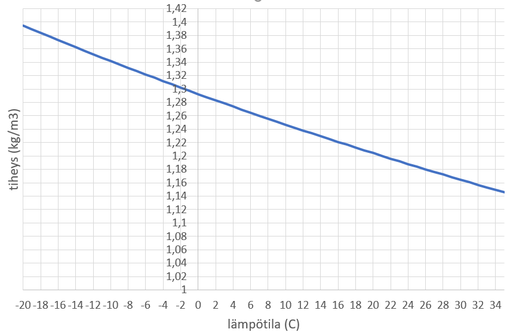

Lämpötilan muutoksen energia
Contents
Lämpötilan muutoksen energia#
Aiemmin todettiin, että kappaleen lämpötila kuvaa kappaleen rakenneosien liikettä. Kun aineeseen tuodaan energiaa, niin aineen rakenneosat käyttävät tämän energian liikkumiseen, ja tällöin aineen lämpötila nousee. Tässä luvussa tarkastellaan sitä, mikä on energiamäärän ja lämpötilan yhteys.
Lämpöenergian käsite#
Mekaniikan kurssilla tarkasteltiin mekaanista työtä \(W\) ja mekaanista energiaa \(E\). Tällöin työllä tarkoitettiin kappaleen siirtämistä tai nostamista, ja tämän työn seurauksena kappale sai liike- tai potentiaalienergiaa. Työn ja energian yksikkö on joule (J). Työn määrää aikayksikössä kutsutaan nimellä teho, ja sen yksikkö J/s tunnetaan lyhenteellä watti (W).
Lämpöopissa suureilla on hieman eri nimet ja lyhenteet:
lämpömäärä \(Q\), yksikkö J
lämpövirta \(\Phi\), yksikkö W
Kappaleeseen voidaan siis tuoda tai kappaleesta voi poistua lämpöenergiaa, jonka määrää mitataan lämpömäärällä \(Q\). Lämmön siirtymisen nopeutta kuvaa lämpövirta \(\Phi\). Ajassa \(t\) siirtyvä lämpömäärä on \(Q=\Phi t\).
Lämpöenergiaa voi siirtyä monella eri tavalla. Auringosta tulee lämpöä säteilemällä, ja Golfvirta kuljettaa meille lämpöä veden mukana. Lämmön siirtymisen johtumalla tuntee helposti koskettamalla takan pintaa. Talvella lämmön siirtymistä toiseen suuntaan voi havainnoida koskettamalla metallista porraskaidetta paljain käsin. Näitä lämmön siirtymisen mekanismeja tarkastellaan erikseen toisaalla.
Fysiikan laskuissa yksikköinä käytetään aina joulea ja wattia, sekä mahdollisesti niiden kymmenpotenssimonikertoja (esim. kilowatti). Vanha energian yksikkö kalori perustuu juuri tähän lämpöenergian aiheuttamaan lämpötilan muuttumiseen. Yksi kalori on sellainen määrä energiaa, että yksi gramma vettä lämpenee sillä yhden asteen. Yksi kilokalori (1000 cal) riittäisi siis nostamaan yhden vesilitran lämpötilaa asteella. Muunnoskerroin on 1 cal = 4.19 J.
Lämpöopin nollas pääsääntö#
Lämpöoppiin kuuluu muutamia erityisiä sääntöjä, ns. pääsääntöjä. Niiden ulkopuolelle jää tärkeä “nollas” pääsääntö: eristetty systeemi siirtyy aina kohti lämpötasapainoa, jossa systeemin sisällä ei esiinny lämpötilaeroja.
Eristetty systeemi tarkoittaa sellaista systeemiä, joka ei ota ulkopuolelta vastaan energiaa eikä myöskään luovuta sitä pois. Jos meillä on ämpärillinen kylmää vettä ja sinne laitetaan kuuma kiuaskivi, niin on ajateltava, että lämpöä siirtyy vain veden ja kiven välillä, eikä siis esimerkiksi veden ja huoneilman välillä. Lähemmäs todellista eristettyä systeemiä päästäisiin, jos ämpäri olisi erimerkiksi styrox-laatikossa.
Mitä sitten tarkoittaa se, että systeemi siirtyy kohti lämpötasapainoa? Jos systeemiin kuuluu osia, joilla on keskenään eri lämpötila, niin energiaa siirtyy lämpimämmästä aineesta kylmempään, kunnes kaikkien osien lämpötila on sama. Ämpärissä siirtyy lämpöenergiaa kiuaskivesta veteen niin kauan, että vesi on lämmennyt ja kiuaskivi jäähtynyt samaan lämpötilaan. Lämpöenergia siirtyy aina lämpimmästä kappaleesta kylmempään.
Ominaislämpökapasiteetti#
Ominaislämpökapasiteetti \(c\) on aineen ominaisuus. Se kertoo, kuinka paljon energiaa vaatii, kun yksi kilogramma kyseistä ainetta lämpenee yhden asteen. Ominaislämpökapasiteetin yksikkö on näin ollen \([c]=\frac{\text{J}}{\text{kg}\cdot \text{K}}\).
Ominaislämpökapasiteetin avulla saadaan laskukaava sille, kuinka suurella lämpömäärällä \(Q\) pitää lämmittää kappaletta, jonka massa on \(m\), jotta saadaan aikaan lämpötilan muutos \(\Delta T\):
\(Q=cm\Delta T\)
Aineiden ominaislämpökapasiteetteja löytyy esimerkiksi taulukot.com -sivustolta. Kiinteiden aineiden ominaislämpökapasiteetit ovat suuruudeltaan muutamien satojen luokkaa:
Aine |
\(c, \frac{\text{J}}{\text{kg}\cdot \text{K}}\) |
|---|---|
graniitti |
800 |
lasi |
840 |
hiekka |
840 |
tiili |
800 |
havupuu |
1200 |
kupari |
390 |
rauta |
450 |
Ominaislämpökapasiteetti liittyy siihen, miten kylmältä tai kuumalta kappale tuntuu. Metallien ominaislämpökapasiteetti on pieni. Tällöin kappaleen lämpötila muuttuu paljon, vaikka siihen (tai siitä) virtaisi vain vähän lämpöenergiaa. Esimerkiksi kahvikupissa oleva lusikka lämpenee. Tiilen ominaislämpökapasiteetti on suuri. Siksi esimerkiksi takkaan voidaan puuta polttamalla varastoida paljonkin energiaa ilman, että takan pinta muuttuu kovinkaan kuumaksi.
Nesteiden ominaislämpökapasiteetit ovat huomattavasti suurempia kuin kiinteiden aineiden. Jäähdytysnesteenä käytettävän glykolin ominaislämpökapasiteetti on \(2430~\frac{\text{J}}{\text{kg}\cdot \text{K}}\).
Rakennusten lämmityksessä on hyvä varastoida lämpöä veteen. Sen ominaislämpökapasiteetti on \(4190~\frac{\text{J}}{\text{kg}\cdot \text{K}}\). Suuri ominaislämpökapasiteetti näkyy luonnossa siten, että vesistöjen lähellä lämpötilat ovat tasaisempia kuin kuivilla alueilla. Kesällä veteen kerääntyy valtavasti lämpöenergiaa, ja syksyllä se vapautuu hitaasti ympäristöön.
Kaasujen ominaislämpökapasiteetti riippuu siitä, pidetäänkö kaasu vakiopaineessa vai vakiotilavuudessa. Vakiopaine tarkoittaa sitä, että kaasu pääsee laajentumaan vapaasti. Kaasujen tilavuushan muuttuu erittäin voimakkaasti, kun kaasua lämmitetään. Vakiotilavuus taas liittyisi tilanteeseen, jossa kaasu on tiiviissä säiliössä (tällöin kaasu kuumentuessa sen paine kasvaa). Rakennusalan sovelluksissa ajatellaan, että kaasu on vakiopaineessa, ja tällöin minkä tahansa kaasun ominaislämpökapasiteettina voidaan käyttää arvoa \(1004~\frac{\text{J}}{\text{kg}\cdot \text{K}}\).
Lämpökapasiteetti#
Ominaislämpökapasiteetti \(c\) on aineen ominaisuus. Lämpökapasiteetti \(C\) on kokonaisen kappaleen ominaisuus. Se on verrannollisuuskerroin, jolla kuvataan kappaleeseen tai kappaleesta siirtyvän lämpöenergian \(Q\) ja koko kappaleen lämpötilan muutoksen \(\Delta T\) välista yhteyttä: \(Q=C \Delta T\).
Esimerkiksi takan lämpökapasiteetti voidaan laskea kertomalla sen massa ja takkakiven ominaislämpökapasiteetti keskenään. Takan lämpökapasiteetti kertoo yhden asteen lämpötilan nostamiseen tarvittavan energiamäärän, tai vastaavasti takan jäähtyessä energian, joka vapautuu kun takka jäähtyy asteen verran.
Esimerkki
Kuinka paljon vapautuu energiaa, kun takka jäähtyy 50 astetta? Takan massa on 1500 kg, josta voidaan laskea lämpökapasiteetiksi noin 1200 kJ/K.
Ratkaisu
Vapautuvan energian määrä on \(Q = C \Delta T = 1200 \frac{\text{kJ}}{K}\cdot 50~\text{K} = 60000~\text{kJ} = 60~\text{MJ}\). Energiamäärä on likimain sama kuin poltettaessa 2 litraa bensiiniä.
Sovelluksia#
Lämmön siirtymiseen liittyvissä sovelluksissa laskun periaate on: luovutettu energia = vastaanotettu energia. Ominaislämpökapasiteetin kaavassa \(Q=cm\Delta T\) energian \(Q\) paikalle kirjoitettava luku tai lauseke riippuu siitä, millä tavalla energia siirtyy. Jos energia siirtyy aineesta tai esineestä 1 toiseen (aine tai esine 2), niin voidaan yhtälö kirjoittaa muodossa \(c_1 m_1 \Delta T_1 = c_2 m_2 \Delta T_2\).
Esimerkki
Kiuaskivien valmistaja halusi selvittää tuotteensa ominaislämpökapasiteetin. Hän lämmitti 5.0 kg kiviä kiehuvassa vedessä \(100^{\circ}~\text{C}\). Lämpötilaan. Tämän jälkeen kivet siirrettiin lämpöeristettyyn astiaan, jossa oli 10 litraa \(20^{\circ}\text{C}\) lämpöistä vettä. Lämpötilojen tasoittumisen jälkeen mitattiin astiassa olevan veden loppulämpötilaksi \(28^{\circ}\text{C}\). Laske kiuaskivien ominaislämpökapasiteetti.
Ratkaisu
Energiaperiaate: veden vastaanottama lämpöenergia = kiuaskivien luovuttama lämpöenergia. Merkitään veteen liittyviä suureita alaindeksillä \(v\) ja kiuaskiviin liittyviä suureita alaindeksillä \(k\):
\(Q_v=Q_k\)
\(c_v m_v \Delta T_v = c_k m_k \Delta T_k\)
Ratkaistaan ominaislämpökapasiteetti \(c_k\):
\(c_k=\frac{c_v m_v \Delta T_v}{m_k \Delta T_k}\)
Lämpötilojen muutokset ovat vedellä \(T=(28-20)~\text{K}=8~\text{K}\) ja kivillä \(T=(100-28)~\text{K}=72~\text{K}\).
Veden massaksi voidaan laskea \(m_v=10~\text{l}\cdot 1~\frac{\text{kg}}{\text{l}}=10~\text{kg}\).
Sijotetaan luvut:
\(c_k=\frac{4190~\frac{\text{J}}{\text{kg}\cdot \text{K}}\cdot 10~\text{kg} \cdot 8~\text{K}}{5~\text{kg} \cdot 72~\text{K}} \approx 0.93~\frac{\text{J}}{\text{kg}\cdot \text{K}}\).
Esimerkki
Saunan padasta otetaan ämpäriin 2 litraa vettä, jonka lämpötila on 94 astetta. Kuinka paljon sinun pitää lisätä ämpäriin 10-asteista vettä, jotta saat pesuvedeksi 35-asteista vettä?
Ratkaisu
Energiaperiaate: Lämpimän veden luovuttama energia = kylmän vastaanottama energia. Merkitään lämpimän veden suureita alaindeksillä 1 ja kylmän veden suureita alaindeksillä 2. Ominaislämpökapasiteetti \(c\) on sama kylmällä ja lämpimällä vedellä, ja se supistuukin yhtälöstä pois:
\(Q_1=Q_2\)
\(c m_1 \Delta T_1 = c m_2 \Delta T_2\)
\(m_1 \Delta T_1 = m_2 \Delta T_2\)
Ratkaistaan kylmän veden massa:
\(m_2= m_1 \frac{\Delta T_1}{\Delta T_2}\)
Sijoitetaan lukuarvot. Massan \(m_1\) paikalle voidaan kirjoittaa suoraan \(2~\text{kg}\), sillä veden tiheys on noin \(1~\frac{\text{kg}}{\text{l}}\).
\(m_1= 2~\text{kg}\frac{(94-35)~\text{K}}{(35-10)~\text{K}} = 4.72~\text{kg}\)
Kylmää vettä tarvitaan siis noin 4.7 litraa.
Usein lämmityksen energia on sähköenergiaa. Lämmityslaitteista on yleensä tiedossa teho \(P\) watteina. Kun laitetta käytetään \(t\) sekuntia, niin siirtyneen energian määrä on \(Q=Pt\).
Esimerkki
a) Kuinka kauan kestää, kun 1.0 litraa vettä lämmitetään kiehuvaksi 2000 W teenkeittimellä? Veden lämpötila on aluksi 15 astetta.
b) Matti harkitsee kylpypaljun ostamista. Kylpypaljun vesitilavuus on 600 litraa, ja vesi lämmitetään 30 kW ulkoisella lämmittimellä. Kuinka kauan kestää kylpyveden lämmitys 15-asteisesta vesijohtovedestä 40 asteeseen? Paljonko lämmitys maksaa, jos sähkön hinta on 10 cnt/kWh?
Ratkaisu
Kummassakin tapauksessa sähköenergia muuttuu lämpöenergiaksi. Sähköenergia ilmaistaan tehon ja ajan tulona \(Pt\). Siis \(Pt=m c \Delta T\).
a) Ratkaistaan yhtälöstä \(Pt=m c \Delta T\) aika \(t\) ja sijoitetaan lukuarvot:
\(t=\frac{m c \Delta T}{P}\)
\(t=\frac{1.0~\text{kg}\cdot 4190~\frac{\text{J}}{\text{kg} \cdot \text{K}} \cdot {(100-15)~\text{K}}}{2000~\text{W}} = 178~\text{s}\)
Veden lämmitykseen kiehumispisteeseen menee siis noin 3 minuuttia.
b) Vastaavalla tavalla kuin a-kohdassa:
\(t=\frac{600~\text{kg}\cdot 4190~\frac{\text{J}}{\text{kg} \cdot \text{K}} \cdot {(40-15)~\text{K}}}{30000~\text{W}} = 2095~\text{s}\)
Aikaa kuluu siis \(\frac{2095}{60}~\text{min}\) eli noin 35 minuuttia.
Sähköenergiaa kuluu \(Q=Pt=30~\text{kW}\cdot \frac{35}{60}~\text{h} = 17.5~\text{kWh}\) ja tällöin hinta olisi 1.75 euroa.
Kaavaan \(Q=cm\Delta t\) on hankalaa sijoittaa mitään selkeää massaa \(m\), jos lämpöä siirtävä aine on virtaavaa vettä. Tällöin tarvitaan tilavuusvirran \(q_v\) ja massavirran \(q_v\) käsitettä.
Tilavuusvirta \(q_v\) kertoo sen, kuinka suuri tilavuus esimerkiksi vettä kiertää lämmitysjärjestelmässä tietyssä ajassa. Tilavuusvirta pitää sijoittaa laskuihin yksikössa on \(\text{m}^3/\text{s}\), mutta usein se saatetaan ilmaista lähtötietona muodossa \(\text{l}/\text{min}\) tai \(\text{l}/\text{h}\). Muunnos onnistuu kaavoilla \(1~\text{m}^3=1000~\text{l}\), \(1~\text{min}=60~\text{s}\) ja \(1~\text{h}=3600~\text{s}\).
Massavirta \(q_m\) vastaa tietyssä ajassa systeemin läpi virtaamaan aineen massaa. Se saadaan kertomalla tilavuusvirta \(q_v\) aineen tiheydellä \(\rho\). Vedelle voidaan käyttää arvoa \(\rho=1000~\text{kg}/\text{m}^3\).
Massavirtaa voidaan käyttää laskuissa hyödyntämällä periaatetta: luovutettu lämpöteho = vastaanotettu lämpöteho, eli \(\Phi = q_m c \Delta T\). Kaavan voi johtaa energian säilymislaista jakamalla yhtälön molemmat puolet ajalla \(t\).
Esimerkki
Taloon tulee kaukolämpöverkosta 77-asteista vettä. Tilavuusvirta on \(2.5~\text{m}^3\text{/h}\). Kuinka monta astetta vesi jäähtyy lämmönvaihtimessa, kun talon tehonkulutus on 2500 W?
Ratkaisu
Talo vastaanottaa vedeltä tehon \(\Phi\), ja vesi luovuttaa lämpöä teholla \(q_m c \Delta t\).
Ratkaistaan lämpötilan muutos \(\Delta T\) yhtälöstä \(\Phi = q_m c \Delta T\):
\(\Delta T = \frac{\Phi}{q_m c}\)
Massavirran \(q_m\) saa tilavuusvirrasta \(q_v\). Oletetaan veden tiheydeksi \(\rho = 1000~\frac{\text{kg}}{\text{m}^3}\). Massavirta on \(q_m=q_v \rho\). Massavirran sekunnissa saa jakamalla massavirran tunnissa luvulla 3600. Siis massavirta on
\(q_m = \frac{2.5~\frac{\text{m}^3}{\text{h}} \cdot 1000~\frac{\text{kg}}{\text{m}^3}}{3600~\frac{\text{s}}{\text{h}}} = 0.694~\frac{\text{kg}}{\text{s}}\).
Lämpötilan muutokseksi saadaan nyt
\(\Delta T = \frac{2500~\text{W}}{0.694~\frac{\text{kg}}{\text{s}} \cdot 4190~\frac{\text{J}}{\text{kg} \cdot \text{K}}} = 0.86~\text{K}\)
Vesi jäähtyy siis noin 0.9 astetta.
Esimerkki
Vesihanan sekoittimeen tuodaan putkesta A tilavuusvirta 2.5 litraa/min 55-asteista vettä, ja putkesta B tilavuusvirta 4.5 litraa/min 10-asteista vettä. Määritä tilavuusvirta ja veden lämpötila sekoittimen jälkeen putkessa C.
Ratkaisu
Putkessa C tilavuusvirta on putkien A ja B tilavuusvirtojen summa, siis 7 litraa/min.
Kun putkien A ja putkien B vedet sekoittuvat, niin putken A vesi luovuttaa energiaa putken B vedelle. Energiaperiaatteen mukaisesti siis
\(q_{m,A} c \Delta T_A = q_{m,B} c \Delta T_B\)
Kirjoitetaan massavirrat tilavuusvirtojen avulla:
\(q_{v,A} \rho c \Delta T_A = q_{v,B} \rho c \Delta T_B\)
Yhtälöstä supistuu pois veden tiheys \(\rho\) ja ominaislämpökapasiteetti \(c\):
\(q_{v,A} \Delta T_A = q_{v,B} \Delta T_B\)
Veden lämpötilan muutoksissa esiintyy tuntematon loppulämpötila \(T\). Vesien lämpötilan muutos \(\Delta T\) pitää siis ilmaista alkulämpötilan ja loppulämpötilan erotuksena. Alkulämpötilat voi sijoittaa yhtälöön suoraan Celcius-asteina, sillä erotus on yhtä suuri riippumatta siitä, käytetäänkö Celsius- vai Kelvin-asteikkoa. Kun sijoitetaan yhtälöön vielä tilavuusvirrat, saadaan
\(2.5~\frac{\text{l}}{\text{min}} (55^{\circ}~\text{C}-T) = 4.5~\frac{\text{l}}{\text{min}} (T-15^{\circ}~\text{C})\)
Huomataan, että tilavuusvirran yksikölläkään ei ole merkitystä, koska yksikkö supistuu kuitenkin pois. Ratkaisemalla yhtälö (esimerkiksi WolframAlphalla) saadaan \(T\approx 26^{\circ}~\text{C}\).
Esimerkki
Vedensekoittimeen tuodaan putkesta A tilavuusvirta 3.5 litraa/min 12-asteista vettä. Kuinka suuri tilavuusvirta pitää siihen sekoittaa putkesta B tulevaa 60-asteista vettä, jotta veden lämpötila sekoittimen jälkeen olisi 35 astetta?
Ratkaisu
Edellisessä esimerkissä johdettiin laskukaava \(q_{v,A} \Delta T_A = q_{v,B} \Delta T_B\). Tästä saadaan ratkaistua putken B tilavuusvirta:
\(q_{v,B}=q_{v,A}\frac{\Delta T_A}{\Delta T_B}\)
Sijoitetaan suureiden arvot:
\(q_{v,B}=3.5~\frac{\text{l}}{\text{min}}\frac{(35-12)^{\circ}~\text{C}}{(60-35)^{\circ}~\text{C}}=3.22~\frac{\text{l}}{\text{min}}\)
Jos virtaava aine on ilmaa, niin laskukaavoihin tarvitaan ilman tiheys. Ilma on huomattavasti tiheämpää kylmänä kuin lämpimänä (kyse on lämpölaajenemisesta: kylmän ilman molekyylit liikkuvat vähemmän kuin kuuman, joten ne asettuvat lähemmäs toisiaan). Tiheys saadaan laskukaavasta \(\rho=\frac{p}{RT}\), missä \(p\) on ilman paine ja \(R\) on vakio \(R=287~\frac{\text{J}}{\text{kg}\cdot\text{K}}\). Ilmanpaine on rakennusten tasolla lähes vakio, ja sen paikalle voi sijoittaa niinsanotun normaalipaineen 101 325 Pa. Oheisessa kuvaajassa on edellisellä kaavalla laskettuja ilman tiheyksiä eri lämpötiloissa.

Esimerkki
Ilmastointikanavassa virtaa 32-asteista ilmaa virtausnopeudella \(290~\text{m}^3\text{/h}\). Millä nopeudella kanavaan on sekoitettava 5-asteista ulkoilmaa, jotta ilman lämpötilaksi tulisi 20 astetta?
Ratkaisu
Kylmällä ja lämpimällä ilmalla on eri tiheys, joten laskussa on käytettävä massavirtoja. Muutetaan ensin lämpimän ilman tilavuusvirta massavirraksi. Edellisen kuvaajan perusteella (tai laskukaavalla laskemalla) 32-asteisen ilman tiheys on noin \(1.16~\text{kg/m}^3\). Lämpimän ilman massavirta on siis \(1.16~\text{kg/m}^3 \cdot 290~\text{m}^3\text{/h} = 336~\text{kg/h}\). Lämpimän ilman lämpötilan muutos on 12 astetta ja kylmän ilman lämpötilan muutos on 15 astetta. Siis kylmän ilman massavirta \(q_m\) saadaan yhtälöstä
\(336~\text{kg/h}\cdot c \cdot 12~\text{K} =q_m \cdot c \cdot 15~\text{K}\),
missä \(c\) on ilman ominaislämpökapasiteetti. Suureen \(c\) arvo on sama kylmällä ja lämpimällä ilmalla, joten se voidaan supistaa pois yhtälöstä. Tällöin yhtälöksi tulee
\(336~\text{kg/h} \cdot 12~\text{K} =q_m \cdot 15~\text{K}\),
josta ratkeaa \(q_m = 269~\text{kg/h}\).
Kylmän ilman tilavuusvirta \(q_v\) saadaan jakamalla massavirta \(q_m\) kylmän ilman tiheydellä. Kuvaajasta tai laskemalla saadaan 5-asteisen ilman tiheydelle arvo \(1.27~\text{kg/m}^3\). Niinpä tilavuusvirraksi tulee
\(q_v = \frac{269~\text{kg/h}}{1.27~\text{kg/m}^3} = 212~\text{m}^3\text{/h}\).